SelectBox에서 선택된 데이터를 검증할 수 있는 속성과 메소드를 사용한 예제입니다.
이 예제는 아래의 속성과 메소드를 사용하였습니다.
mandatory: (속성)'true'로 설정하면 validate 메소드에서 검증을 수행하여 입력 값이 없을 때 false를 반환
displaymessage: (속성)검증 실패 시 Engine 내부에 정의된 메시지 표시
invalidMessage: (속성)검증 결과가 실패일 경우, 속성에 지정한 값을 메시지 표시
invalidMessageFunc: (속성)검증 결과가 실패일 경우, 사용자 지정 메소드 반환
validate: (메소드)컴포넌트의 유효성 관련 속성값을 통해 유효성 검사를 실행
선택 여부 확인하기
지정된 메시지 표시하기
사용자 설정 메시지 표시하기
사용자 지정 메소드로 설정한 메시지 표시하기
예제 영역 '선택 여부 확인하기'에서 테스트합니다.SelectBox의 항목이 선택되지 않은 상태이고, 컴포넌트에 '- choose-'가 표시되어 있습니다. (항목이 선택되지 않았을 때 '- choose -'가 표시되도록 설정되었습니다.)
1
STEP 1: '선택 여부 확인하기' 버튼을 클릭합니다.
2
STEP 2: 실행 결과를 확인합니다.
브라우저 메시지 창에 'false' 가 표시되는 것을 확인합니다.
Image 1.브라우저(Chrome) 실행 예시
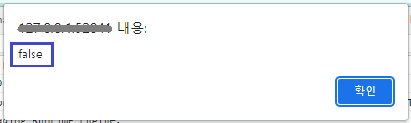
3
STEP 3: SelectBox의 'Apple' 항목을 선택 후 '선택 여부 확인하기' 버튼을 클릭합니다.
Image 2.브라우저(Chrome) 실행 예시 - 항목 선택
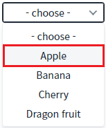
Image 3.브라우저(Chrome) 실행 예시
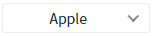
4
STEP 4: 실행 결과를 확인합니다.
브라우저 메시지 창에 'true' 가 표시되는 것을 확인합니다.
Image 4.브라우저(Chrome) 실행 예시
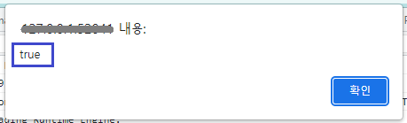
예제 영역 '지정된 메시지 표시하기'에서 테스트합니다.SelectBox의 항목이 선택되지 않은 상태이고, 컴포넌트에 '- choose-'가 표시되어 있습니다. (항목이 선택되지 않았을 때 '- choose -'가 표시되도록 설정되었습니다.)
1
STEP 1: '지정된 메시지 표시하기' 버튼을 클릭합니다.
2
STEP 2: 실행 결과를 확인합니다.
브라우저 메시지 창에 '필수 입력 항목입니다' 가 표시되는 것을 확인합니다.
※ 이 메시지는 웹스퀘어에서 지정해 놓은 메시지입니다.
Image 5.브라우저(Chrome) 실행 예시
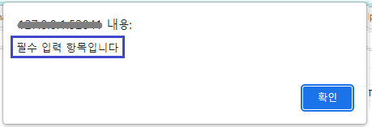
3
STEP 3: 'SelectBox의 'Apple' 항목을 선택 후 '지정된 메시지 표시하기' 버튼을 클릭합니다.
Image 6.브라우저(Chrome) 실행 예시 - 항목 선택
Image 7.브라우저(Chrome) 실행 예시
4
STEP 4: 실행 결과를 확인합니다.
메시지가 표시되지 않는 것을 확인합니다.
예제 영역 '사용자 설정 메시지 표시하기'에서 테스트합니다.SelectBox의 항목이 선택되지 않은 상태이고, 컴포넌트에 '- choose-'가 표시되어 있습니다. (항목이 선택되지 않았을 때 '- choose -'가 표시되도록 설정되었습니다.)
1
STEP 1: '사용자 설정 메시지 표시하기' 버튼을 클릭합니다.
2
STEP 2: 실행 결과를 확인합니다.
브라우저 메시지 창에 '사용자 설정 메시지' 가 표시되는 것을 확인합니다.
Image 8.브라우저(Chrome) 실행 예시
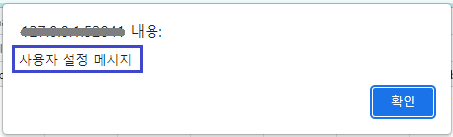
3
STEP 3: SelectBox의 'Apple' 항목을 선택 후 '사용자 설정 메시지 표시하기' 버튼을 클릭합니다.
Image 9.브라우저(Chrome) 실행 예시 - 항목 선택
Image 10.브라우저(Chrome) 실행 예시
4
STEP 4: 실행 결과를 확인합니다.
메시지가 표시되지 않는 것을 확인합니다.
예제 영역 '사용자 지정 메소드로 설정한 메시지 표시하기'에서 테스트합니다.SelectBox의 항목이 선택되지 않은 상태이고, 컴포넌트에 '- choose-'가 표시되어 있습니다. (항목이 선택되지 않았을 때 '- choose -'가 표시되도록 설정되었습니다.)
1
STEP 1: '사용자 지정 메소드로 설정한 메시지 표시하기' 버튼을 클릭합니다.
2
STEP 2: 실행 결과를 확인합니다.
브라우저 메시지 창에 '항목을 선택하세요.' 가 표시되는 것을 확인합니다.
Image 11.브라우저(Chrome) 실행 예시
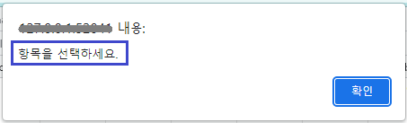
3
STEP 3: 버튼을 클릭합니다.
SelectBox의 'Apple' 항목을 선택 후 '사용자 지정 메소드로 설정한 메시지 표시하기' 버튼을 클릭합니다.
4
STEP 4: 실행 결과를 확인합니다.
메시지가 표시되지 않는 것을 확인합니다.
1
STEP 1: 'validate' 메소드를 사용하여 유효성 검사를 실행합니다.
Example 1.Script
//버튼 '선택 여부 확인하기' 클릭 시 scwin.btn_ex1_onclick = function (e) { // SelectBox 'sbx_exam1'의 체크 여부를 검증합니다. var message = sbx_exam1.validate(); alert(message); };
2
STEP 2: SelectBox의 속성을 설정합니다.
[필수] mandatory="true"
[default:false, true] 필수 선택 적용 여부. validate 메소드를 통해 입력 값을 검증할 경우 필수 입력을 확인.
Image 12.웹스퀘어 스튜디오의 Component View - 속성 설정 예시
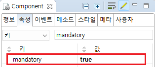
Example 2.Source
<!-- selectBox의 소스 본문 예시 --> <xf:select1 mandatory="true" id="sbx_exam1"> <!-- 중략 --> </xf:select1>
1
STEP 1: 'validate' 메소드를 사용하여 유효성 검사를 실행합니다.
Example 3.Script
//버튼 '지정된 메시지 표시하기' 클릭 시 scwin.btn_ex2_onclick = function (e) { // SelectBox 'sbx_exam2'의 체크 여부를 검증합니다. sbx_exam2.validate(); };
2
STEP 2: SelectBox의 속성을 설정합니다.
[필수] mandatory="true"
[default:false, true] 필수 선택 적용 여부. validate 메소드를 통해 입력 값을 검증할 경우 필수 입력을 확인.
[필수] displaymessage="true"
[default:false, true] 기본적으로 엔진 내부에 정의된 메시지를 표시. 단, invalidMessage 속성이 정의된 경우, 해당 속성으로 정의된 메시지를 표시.
Image 13.웹스퀘어 스튜디오의 Component View - 속성 설정 예시
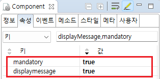
Example 4.Source
<!-- selectBox의 소스 본문 예시 --> <xf:select1 displaymessage="true" mandatory="true" id="sbx_exam2"> <!-- 중략 --> </xf:select1>
1
STEP 1: 'validate' 메소드를 사용하여 유효성 검사를 실행합니다.
Example 5.Script
//버튼 '사용자 설정 메시지 표시하기' 클릭 시 scwin.btn_ex3_onclick = function (e) { // SelectBox 'sbx_exam3'의 체크 여부를 검증합니다. sbx_exam3.validate(); };
2
STEP 2: SelectBox의 속성을 설정합니다.
[필수] mandatory="true"
[default:false, true] 필수 선택 적용 여부. validate 메소드를 통해 입력 값을 검증할 경우 필수 입력을 확인.
[필수] displaymessage="true"
[default:false, true] 기본적으로 엔진 내부에 정의된 메시지를 표시. 단, invalidMessage 속성이 정의된 경우, 해당 속성으로 정의된 메시지를 표시.
[필수] invalidmessage="yourMessage"
[default:"", "yourMessage"] displaymessage="true "이고 validate(); 검증 결과가 실패인 경우 표시되는 메시지.
Image 14.웹스퀘어 스튜디오의 Component View - 속성 설정 예시
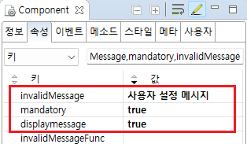
Example 6.Source
<!-- selectBox의 소스 본문 예시 --> <xf:select1 mandatory="true" displaymessage="true" invalidMessage="사용자 설정 메시지" id="sbx_exam3"> <!-- 중략 --> </xf:select1>
1
STEP 1: SelectBox의 속성을 설정합니다.
[필수] mandatory="true"
[default:false, true] 필수 선택 적용 여부. validate 메소드를 통해 입력 값을 검증할 경우 필수 입력을 확인.
[필수] displaymessage="true"
[default:false, true] 기본적으로 엔진 내부에 정의된 메시지를 표시. 단, invalidMessage 속성이 정의된 경우, 해당 속성으로 정의된 메시지를 표시.
[필수] invalidMessageFunc="사용자 정의 메소드"
[default:""] validate(); 검증 결과가 실패일 경우, 결과 메시지를 동적으로 표시할 사용자 정의 메소드 이름.
예시) invalidMessageFunc="scwin.fn_msg"
Image 15.웹스퀘어 스튜디오의 Component View - 속성 설정 예시
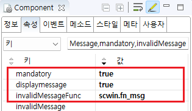
Example 7.Source
<xf:select1 mandatory="true" displaymessage="true" invalidMessageFunc="scwin.fn_msg" id="sbx_exam4"> <!-- 중략 --> </xf:select1>
2
STEP 2: SelectBox의 메소드를 사용하여 스크립트를 작성합니다.
'validate' 메소드를 사용하여 유효성 검사를 실행하고 'invalidMessageFunc' 속성에 정의한 사용자 정의 메소드를 통해 메시지의 내용을 설정합니다.
Example 8.Script
//버튼 '사용자 지정 메소드로 설정한 메시지 표시하기' 클릭 시 scwin.btn_ex4_onclick = function (e) { sbx_exam4.validate(); }; //SelectBox 속성 'invalidMessageFunc'의 메소드 scwin.fn_msg = function () { var msg; var invalidType = this.getType(); // invalid type switch (invalidType) { case "mandatory": msg = "항목을 선택하세요."; break; default: msg = "Enter again."; break; } alert(msg); }
validate
displayMessage
mandatory
invalidMessage
invalidMessageFunc